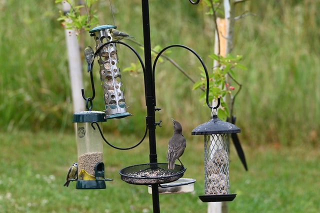
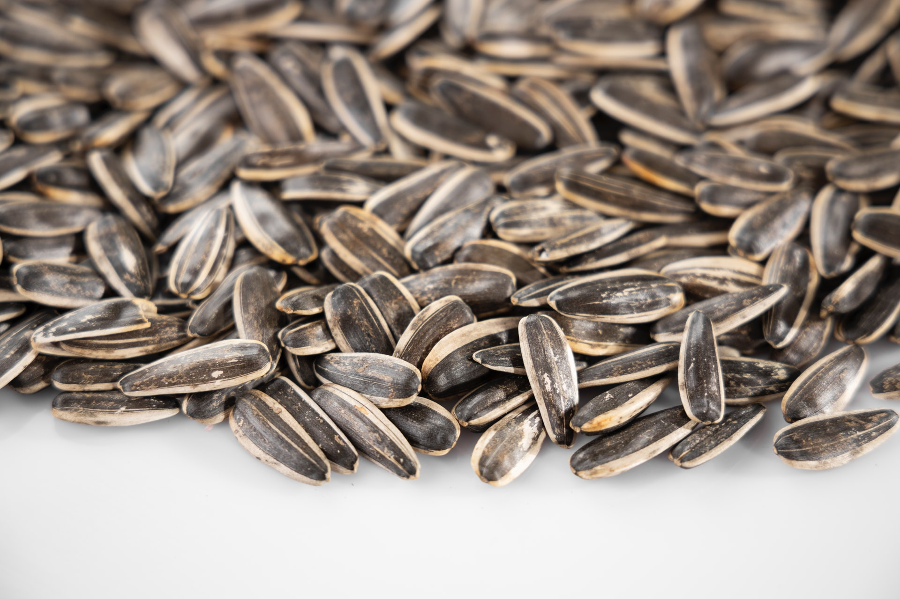
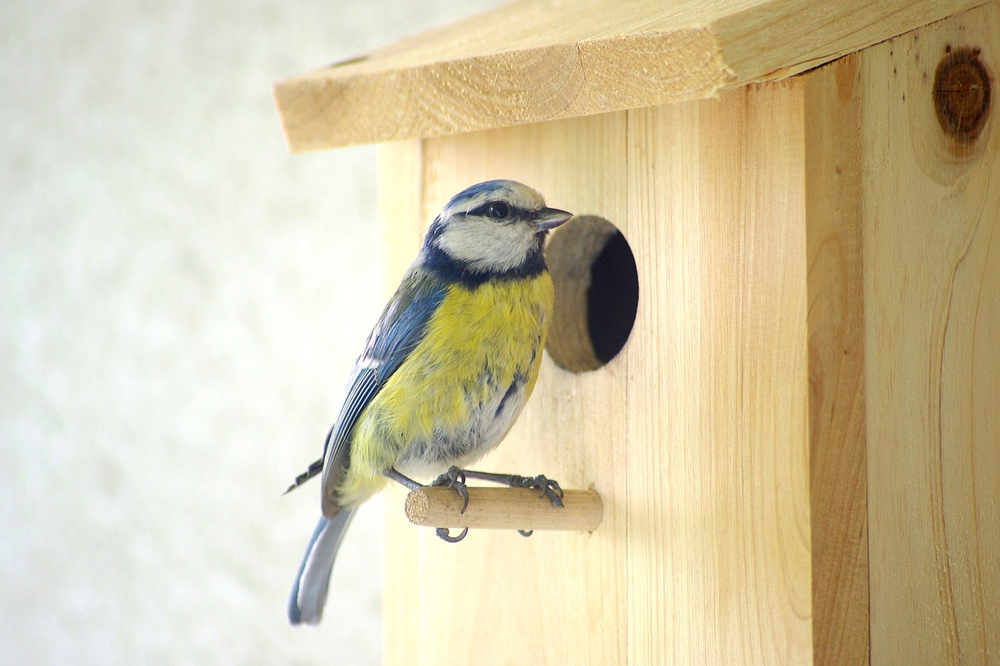
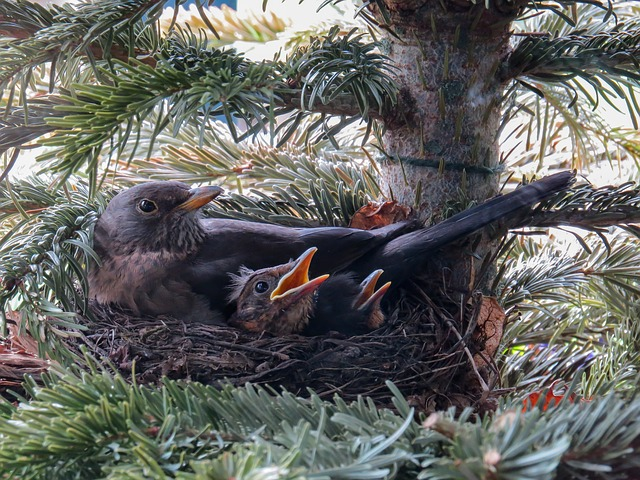

How to Attract Birds to Your Yard
When it comes to attracting birds, providing for their basic needs, is essential to making your yard a welcoming environment.
Food, water, and shelter are all key in how to attract birds, but there are other factors to consider.
While this meets their physiological needs for survival, birds also look for a safe space to call their home, as well as somewhere they can be social. Follow our tips below to make your yard a welcoming haven for birds.
While this meets their physiological needs for survival, birds also look for a safe space to call their home, as well as somewhere they can be social. Follow our tips below to make your yard a welcoming haven for birds.
- 1. Create A Feeding Station
- Create a bird feeding station to address your feathered friends’ most basic need for survival – food! Rather than putting up one feeder, consider creating a bird feeding station with multiple feeders to attract more birds to your yard.
- You’ll want to consider placing your station somewhere you can view it year-round, and in the safest space for your birds. Different species of birds feed at different levels and the perfect feeding station will match this. Start with at least 3 or 4 feeders, placing them at different heights, with a variety of feeder types, giving you the best chance at attracting birds to your yard. The more feeders you have, the more birds you will attract.

- 2. Offer the Right Food
- With a variety of different feeders, you are on the right track to attracting a gaggle of birds to your yard. Tempting birds with the right food is another excellent step in meeting their needs and providing a safe haven for them. Different birds eat different things, so giving them a choice is not only a tool to entice them but also helps them get the proper nutrition they need to stay healthy.
- One of the biggest mistakes that beginners often make is buying cheap food or generic low-quality feed like those typically found at large chain hardware stores or grocery stores. While it’s a start, help your birds stay healthy by investing in quality bird feed that meets their nutritional needs and is best suited for them.
- Black Oil Sunflower seed is an excellent place to begin and will attract a variety of songbirds, including Blue Jays, Cardinals, Grosbeaks, and chickadees. But don’t stop there – offer your birds a variety of seeds and berries to appeal to the widest array of wild birds. Smaller seeds like nyjer or millet will attract different species, like nuthatches and finches, that aren’t as big a fan of sunflower seeds.

- 3. Add a Source of Water
- Adding a bird bath or water source is the next step in learning how to attract birds to your yard. When water is available, many species of birds will bathe every day to keep their feathers clean and healthy. Offering shallow bird baths (one to three inches deep) or even building a small pond in your yard will help birds stay clean and hydrated.
- Birds listen for moving water, so adding a pump or mister that creates fresh, bubbling water will draw even more feathered friends to your yard. If you live in a cold climate, you may also want to invest in a heater or de-icer to keep your bird bath or pond from freezing. Birds bathe year-round, but often struggle to find water sources in the winter, so having fresh water will make your yard a desirable destination.

- 4. Install a Birdhouse
- Shelter is a key factor in making birds feel safe and more likely to make your yard their home. Install a birdhouse to entice birds to stay, by providing safe and reliable shelter for them. Of course, not all birds like birdhouses, but those that do have different needs and preferences depending on the species.
- If you want to attract chickadees, wrens, or other small birds, an 8-inch tall house, with a 4 by 6 or 5 by the 5-inch base is generally acceptable while the larger the bird, the larger the house it will need, with owls needing houses as large as 24 inches tall with a 10 by 10-inch base. In addition to the size of the house, an important aspect of selecting the right house includes the size of the entrance hole.
- Follow the adage above regarding size, and check breed-specific requirements for the specific birds you are trying to attract. And lastly, installing location is important when it comes to birdhouses. Install your birdhouse in a safe location, high enough off the ground to encourage birds to find safety in their house.

- 5. Encourage Nesting
- There are a variety of ways to encourage nesting and attract birds to raise their family in your backyard. Not all birds will make use of birdhouses, but there are many other ways to encourage nesting in your yard.
- Offering materials that birds use when constructing their nests, such as string, pet fur, hair, and yarn in a suet cage feeder, is one way to help with construction and make your yard an attractive nesting site. Many birds will make use of these implements to help in the building of their nests, while others will take advantage of natural offerings around your yard. The weed fluff from dead flowers, grass clippings left on the lawn, and brush piles can all provide much-needed nesting materials to aid with the build.
- Birds face growing threats from lack of adequate shelter and nesting sites, so you can also help by planting native shrubs, trees, and flowers that encourage nesting. Plants native to their environment are more specifically adapted to the weather of that climate and provides the best natural nesting site to attract birds into your birdscape.
